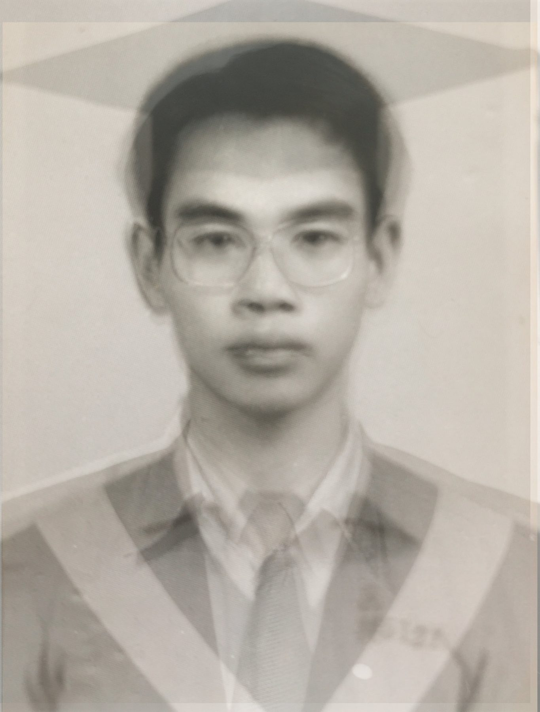

楊敏寬 攝影作品
作品
四個系列，共 77 件

重曝肖像
關於
About Ming-kuan Yang
- 出生於台灣
- 國立交通大學畢業
- 東海大學研究所畢業
- 全國美展攝影組入選
- 《附著與穿越》攝影聯展暨發表
創作方向
作品多以重複曝光與定時拍攝處理時間：讓衣裳淡去以看見人的面目，讓花朵與包裝容器並置以比較存在的長短，讓數位檔案損壞以追問相片能否保存記憶。
聯絡
Contact
四個系列，共 77 件

重曝肖像
About Ming-kuan Yang
作品多以重複曝光與定時拍攝處理時間：讓衣裳淡去以看見人的面目，讓花朵與包裝容器並置以比較存在的長短，讓數位檔案損壞以追問相片能否保存記憶。
Contact